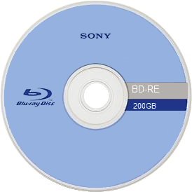

Engineers have recognized that DVDs' information density are affected by the wavelength of blue laser diodes. Soon, they were able to have the diodes go at 405 - 407 nanometers, a wavelength that allows the information be properly sotred.
Sony announced two collaborative projects with Phillips, Panasonic and TDK where they'll use the diodes UDO (Ultra Density Optical) and DVR Blue to create a high definition optical discs. Originally called the Blue Disc in 2001 it would be renamed Blu-Ray Disc in 2002. After the BD-ROM specifications were finalized, Samsung shipped the first BD-ROM players in June 2006. Some of their first titles include 50 First Dates , Hitch, and House of Flying Daggers (all Sony titles) .
Blu-Rays are made out of polycarbonic plastic.
| Film | Copies Sold |
|---|---|
| Frozen | 7,785,000 |
| Avatar | 7,450,000 |
| Beauty and the Beast (1991) | 4,500,000 |
Blu-Rays elevated the home entertainment game. Its functions allow viewers to look at the main menu when the movie is playing. With its large capacity, people can write all the necessary data of their film and extras in smaller discs and incorporate a high quality experience.
Copyright (c) Edward Frumkin 2026